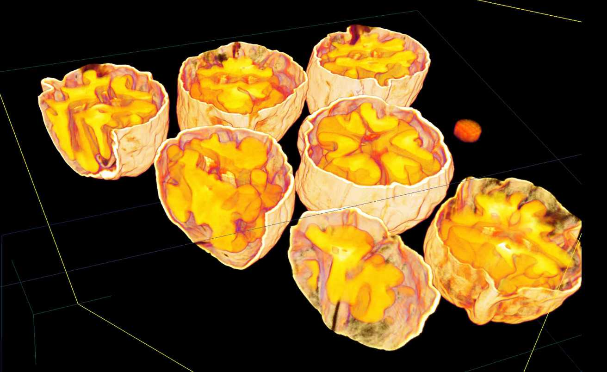
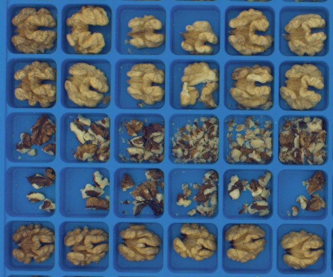
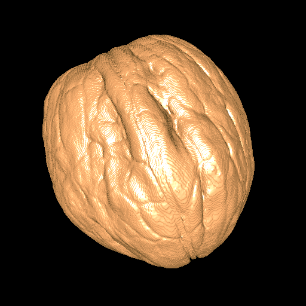
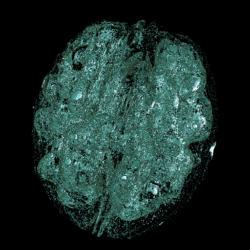
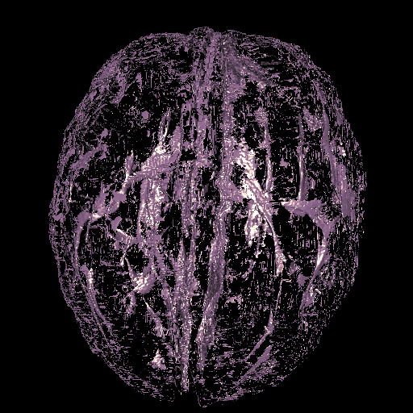
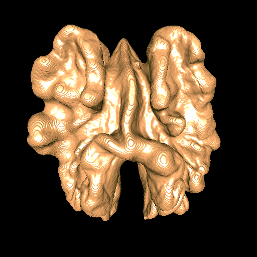

The shape and size of shells, kernels, and cracks —in a nutshell
  148 accessions X-ray CT scanned Qualitative crackability     Shell Air Packing Tissue Kernel
Preprint
DOI: 10.1101/2023.09.26.559651
Python Code
github.com/amezqui3/walnut_tda